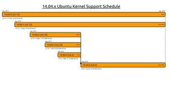

LTS Enablement Stacks
Dieser Artikel wurde für die folgenden Ubuntu-Versionen getestet:
Ubuntu 16.04 Xenial Xerus
Ubuntu 14.04 Trusty Tahr
Zum Verständnis dieses Artikels sind folgende Seiten hilfreich:
Mit der Einführung des LTS Enablement Stack-Support  im Herbst 2012 erhielt erstmals auch eine LTS-Version auf Wunsch einen neuen Kernel samt dem zugehörigen X.Org-Stack und Mesa. Die vorher genutzte Methode mittels Backport-Kerneln wurde aufgegeben. Dies betrifft allerdings nur Neuinstallationen – bestehende LTS-Installationen werden grundsätzlich nicht automatisch aktualisiert. Faktisch entscheidet so bei der Installation die Auswahl des Point-Release (14.04.x bzw. 16.04.x), welchen Kernel und dazugehörige Module (Treiber) man erhält. Indirekt betroffen ist davon auch die Unterstützungsdauer für das System, d.h. wie lang man Aktualisierungen erhält.
im Herbst 2012 erhielt erstmals auch eine LTS-Version auf Wunsch einen neuen Kernel samt dem zugehörigen X.Org-Stack und Mesa. Die vorher genutzte Methode mittels Backport-Kerneln wurde aufgegeben. Dies betrifft allerdings nur Neuinstallationen – bestehende LTS-Installationen werden grundsätzlich nicht automatisch aktualisiert. Faktisch entscheidet so bei der Installation die Auswahl des Point-Release (14.04.x bzw. 16.04.x), welchen Kernel und dazugehörige Module (Treiber) man erhält. Indirekt betroffen ist davon auch die Unterstützungsdauer für das System, d.h. wie lang man Aktualisierungen erhält.
Bei einer Neuinstallation von beispielsweise 14.04.2 wird also nicht mehr Kernel 3.13, sondern der aus Ubuntu 14.10 zurückportierte Kernel 3.16 samt dessen X.Org-Stack & Mesa installiert. Zum X.Org-Stack gehören auch die freien Grafiktreiber, wie Radeon, Nouveau, Intel u.a.m.
Diese Veränderung wurde von den Entwicklern als notwendig angesehen, um während des langen Unterstützungszeitraumes von fünf Jahren die Hardwarekompatibilität zu verbessern. Canonical bezeichnet diese Aktualisierung als "LTS Enablement Stack-Support" oder auch HWE-Stack (HWE = Hardware Enablement).
LTS Enablement Stacks¶
|  |
| Die HWE-Stacks für 14.04 aus Sicht des Kernel-Teams (Original von leannogasawara unter CC BY-SA 3.0) |
Bestehende Installationen mit Kernel 3.13 (14.04/14.04.1) und 4.4 (16.04/16.04.1) verbleiben beim ursprünglichen Kernel, der deutlich länger (bis zum Ende des Unterstützungszeitraums im April 2019 und April 2021 für 16.04) unterstützt wird. Die Unterstützung für 12.04.2, 12.04.3 und 12.04.4 war bis zum 07. August 2014 gewährleistet. Dann musste man auf 12.04.5 wechseln. Der enthaltene Kernel 3.13 entspricht dem aus 14.04 und wurde dann unter 12.04.5 wieder bis April 2017 unterstützt.
Das Schema funktioniert bei 14.04 genauso, aber um zwei Jahre verschoben: Die Unterstützung für 14.04.2, 14.04.3 und 14.04.4 ist bis August 2016 gewährleistet. Dann muss man auf 14.04.5 wechseln. Der enthaltene Kernel 4.x entspricht dem aus 16.04 und wird dann unter 14.04.5 wieder bis 2019 unterstützt.
Als Neuerung bringt 16.04.2 eine automatische HWE-Aktualisierung mit: Systeme mit HWE werden automatisch aktualisiert, bis sie sich auf dem Stand von 16.04.5 befinden.
Auf der Ubuntu-Internetseite direkt angeboten wird immer nur der jeweils jüngste HWE für Ubuntu 14.04 bzw. 16.04. Die ISO-Abbilder aller vorherigen Ausgaben stehen weiterhin im historischen Archiv  zur Verfügung. Möchte man also keinen HWE-Stack einsetzen, muss man für die Installation die Versionen 14.04.1 bzw. 16.04.1 verwenden.
zur Verfügung. Möchte man also keinen HWE-Stack einsetzen, muss man für die Installation die Versionen 14.04.1 bzw. 16.04.1 verwenden.
HWE-Versionen¶
Welche Version bzw. welches Point Release welche Komponenten mitbringt und wie lange diese unterstützt werden, kann man nachfolgender Tabelle entnehmen:
| Point Releases und LTS Enablement Stacks | |||||
| Ubuntu-Version | Kernel | XServer-Core | Mesa | veröffentlicht am | unterstützt bis |
| 14.04/14.04.1 | 3.13 | 1.15 | 10.1 | 17. April 2014 25. Juli 2014 | April 2019 |
| 14.04.2 | 3.16 | 1.16 | 10.3 | 19. Februar 2015 | 04. August 2016 |
| 14.04.3 | 3.19 | 1.17.1 | 10.5 | 06. August 2015 | 04. August 2016 |
| 14.04.4 | 4.2 | 1.17.2 | 11.0 | 18. Februar 2016 | 04. August 2016 |
| 14.04.5 | 4.4 | 1.18 | 11.2 | 04. August 2016 | April 2019 |
| 16.04/16.04.1 | 4.4 | 1.18 | 11.2 | 21. April 2016 21. Juli 2016 | April 2021 |
| 16.04.2 | 4.8 | 1.18 | 12.0 | 16. Februar 2017 | August 2017 |
| 16.04.3 | 4.10 | 1.19 | 17.0 | 03. August 2017 | bis zum Erscheinen von 16.04.4 |
Quellen: Ubuntu 16.04 Release Schedule und Ubuntu 14.04 Release Schedule
Canonical unterstützt nur die Verwendung eines vollständigen HWE-Stacks, keine Mischung von Einzelkomponenten. So wird beispielsweise ausdrücklich nicht empfohlen, auf einem Desktop-System X.Org-Core 1.15 mit dem wesentlich neueren LTS-Trusty-Kernel 4.4 zu benutzen:
We only intend to support HWE stack package combinations in 12.04 which are derived from the same release, eg. the 13.04 X.org must be used in conjunction with the 13.04 kernel and vice versa. Intermixing a 13.04 enablement kernel with the 12.04 X.org stack or a 13.04 enablement X.org stack with a 12.04 kernel will not be officially tested nor supported.
Quelle: 12.04.4 + 13.10 Hardware Enablement Stack Policies and Procedures, Punkt 5
Allerdings kann es bei einem Server, der ohne grafische Oberfläche betrieben wird, durchaus interessant sein, nur den Kernel selbst zu aktualisieren.
Einschränkung¶
Achtung!
Ein bereits installierter HWE-Stack (vorinstalliert bei Installationsmedien mit Ubuntu 14.04.2, 16.04.2 und neueren Point-Releases) wird in der Aktualisierungsverwaltung durch "Neue Hardwareunterstützung installieren" mit einer eigenen Schaltfläche "Installieren" zur bereitstehenden Aktualisierung angekündigt. Dies sollte man stets ignorieren, wenn man die unten stehende Simulation der Installation nicht oder nicht erfolgreich durchgeführt hat.
Überprüfung¶
Um herauszufinden, auf welchem Stand sich das eigene System befindet, scheidet der bisher übliche Befehl "lsb_release -a" aus. Stattdessen überprüft man zuerst in einem Terminal [1] die aktive Kernelversion:
uname -a
Zusätzlich ist es sinnvoll, die Version des X.Org-Stacks zu prüfen:
dpkg-query -l xserver-xorg-core* | grep '^ii'
und vergleicht die Ergebnisse mit der obigen Tabelle. Noch ausführlicher kann man den aktuellen Systemstand mit:
dpkg-query -l *-lts-* | grep '^ii'
in Erfahrung bringen. Dadurch werden alle Pakete, die den Begriff "-lts-" im Paketnamen tragen und installiert sind, aufgelistet.
Installation¶
Allgemein¶
Der Installationsbefehl enthält die Option "-s" für eine Simulation. Wenn die Abhängigkeiten korrekt aufgelöst werden konnten und man zur Tat schreiten will, muss dafür nur diese Option aus dem Befehl entfernt werden.
Falls der Befehl dagegen eine Fehlermeldung liefert oder Pakete entfernt werden sollen, die man noch benötigt, so sollte man zugunsten eines lauffähigen Systems von der Installation absehen oder versuchen, eine im Abschnitt Problembehebung beschriebene Lösung anzuwenden.
Achtung!
Bei manchen 64-Bit-Systemen kann es zu nicht auflösbaren Abhängigkeiten kommen, beispielsweise beim Paket libglapi-mesa:i386. Vor allem, wenn Anwendungen wie Wine, Google Earth, Skype, Teamviewer oder bestimmte Spiele installiert sind. Es kann auch vorkommen, dass durch die Installation des HWE-Stacks Pakete entfernt werden, die man eigentlich noch behalten möchte und augenscheinlich auch keinen direkten Zusammenhang mit dem HWE-Stack besitzen, etwa die Qt-Bibliothek oder Wine.
Tritt eine nicht auflösbare Abhängigkeit auf, sollte man zumindest derzeit von einer Installation des HWE-Stacks absehen. Aktuell ist keine allgemeingültige Lösung bekannt, außer einer Neuinstallation des gewünschten Systems. Vor diesem Hintergrund wird im unten genannten Befehl die Option "-s" (für Simulation) verwendet, um vorher festzustellen, ob ein Wechsel des HWE-Stacks fehlerfrei ablaufen würde.
In vielen Fällen sind die Abhängigkeiten allerdings auflösbar, wenn die problematische Software deinstalliert und danach erneut die Simulation der Installation des HWE-Stacks getestet wird. Es ist häufig sogar möglich, die problematische Software nach der Installation des HWE-Stacks wieder zu installieren und die alten Einstellungen im Homeverzeichnis weiter zu benutzen, ohne dass dadurch Probleme zu erwarten sind. In einigen Fällen kann statt der Deinstallation problematischer Pakete auch die zusätzliche Aufnahme weiterer *-lts-*-Pakete in den Installationsbefehl einen Konflikt lösen oder die Deinstallation von benötigten Paketen verhindern.
Nach dem Neustart kann man prüfen, ob die neue Xorg-Version installiert und gestartet wurde:
Xorg -version
Ubuntu 16.04¶
Ab 16.04 entfällt die Überprüfung des Namen des aktuellen HWE-Stacks. Zum Installieren muss folgender Befehl ausgeführt werden, das Meta-Paket wählt automatisch die zur Zeit aktuellen Komponenten aus:
Desktop¶
sudo apt-get -s install --install-recommends linux-generic-hwe-16.04 xserver-xorg-hwe-16.04
Ubuntu 14.04¶
Die Installation eines HWE-Stacks erfolgt via Terminal mit Root-Rechten [2]. Um vorab zu prüfen, ob Probleme zu erwarten sind bzw. welche Pakete erneuert werden, benutzt man den folgenden Befehl, um ältere 14.04-Systeme auf 14.04.5 zu aktualisieren:
sudo apt-get -s install --install-recommends linux-generic-lts-xenial xserver-xorg-core-lts-xenial xserver-xorg-lts-xenial xserver-xorg-video-all-lts-xenial xserver-xorg-input-all-lts-xenial libwayland-egl1-mesa-lts-xenial
Falls die AMD64-Version (64 Bit) mit aktiviertem UEFI-Boot installiert wurde, müssen danach auch noch die passenden signierten Kernel installiert werden:
sudo apt-get install linux-signed-generic-lts-xenial
Vor einem Neustart des Systems führt man nach der Aktualisierung auf 14.04.5 noch den Befehl:
sudo dpkg-reconfigure xserver-xorg-lts-xenial
aus, damit die notwendigen Verknüpfungen (Symlinks) neu erstellt und zugeordnet werden.
Deinstallation¶
Eventuell möchte man den HWE deinstallieren, z.B. wenn er nicht mehr unterstützt wird, aber sich der neuere HWE aufgrund von Abhängigkeitsproblemen nicht installieren lässt und die Deinstallation vielleicht besser möglich ist oder um auf einer LTS-Version nicht immer nach Unterstützungs-Ende des HWE auf neuere HWE aktualisieren zu müssen.
Zunächst installiert man wieder die entsprechenden Nicht-HWE-Pakete. Dies erfolgt zunächst nur simuliert:
sudo apt-get -s install --install-recommends linux-generic xserver-xorg-core xserver-xorg xserver-xorg-video-all xserver-xorg-input-all libwayland-egl1-mesa
Dabei kann es (unter Ubuntu 14.04.x beobachtet) vor allem zu folgendem Abhängigkeitsproblem kommen:
Die folgenden Pakete haben unerfüllte Abhängigkeiten:
unity-control-center : Hängt ab von: libcheese-gtk23 (>= 3.4.0) soll aber nicht installiert werden
Hängt ab von: libcheese7 (>= 3.0.1) soll aber nicht installiert werden
E: Fehler: Unterbrechungen durch pkgProblemResolver::Resolve hervorgerufen; dies könnte durch zurückgehaltene Pakete verursacht worden sein.Diese löst man dadurch auf, indem man das dort bemängelte unity-control-center vorübergehend entfernt, um es später wieder zu nachzuinstallieren:
sudo apt-get remove unity-control-center
Dabei ist die Entfernung einiger weniger, bestimmter weiterer Pakete normal, wie folgendes Beispiel zeigt:
Die folgenden Pakete werden ENTFERNT: ubuntu-desktop unity-control-center unity-control-center-signon webaccounts-extension-common xul-ext-webaccounts
Man muss der Entfernung weiterer Pakete zustimmen, so dass hier eine Simulation nicht zwingend nötig ist. Anschließend kann man die obige Simulation der Installation der Nicht-HWE-Pakete ohne dieses Abhängigkeitsproblem ausführen und die Installation tatsächlich durchführen lassen, indem man das "-s" weglässt. Dabei ist normal, dass zahlreiche Pakete hinzugefügt sowie auch entfernt werden:
0 aktualisiert, 145 neu installiert, 66 zu entfernen und 0 nicht aktualisiert.
Diese Liste sollte man sich jedoch zur Kontrolle genau ansehen. Bei mehreren Hundert zu entfernenden Paketen sind Vorsicht und Skepsis angebracht, die Paketnamen sind generell genau anzusehen. Es sollten zudem nur ein paar wenige Dutzend Pakete sein.
Anschließend kann man das zuvor wegen Abhängigkeitsproblemen entfernte Paket unity-control-center wieder nachinstallieren:
sudo apt-get install --install-recommends unity-control-center
Ein paar wenige Programme könnten dennoch noch fehlen und sind manuell in der Paketverwaltung nachinstallierbar. Fehlende Standardprogramme der Desktopumgebungen lassen sich einfach nachinstallieren, indem dessen Metapakete nachinstalliert werden, z.B. ubuntu-desktop für Ubuntu. Eine Liste dieser Pakete befindet sich im Artikel Upgrade im verlinkten Abschnitt Problemlösungen.
Weitere Möglichkeiten zur Deinstallation werden unter How to remove Kernel/LTS Enablement Stack? aufgezeigt. Sie können bei auftretenden Problemen zu Rate gezogen, sollten jedoch stets ebenfalls mit "-s" erst mal nur simuliert getestet werden.
Problembehebung¶
Nicht erfüllte Paket-Abhängigkeiten¶
Bricht die Installation oder die Simulation mit einer Fehler-Meldung wegen nicht erfüllter Paket-Abhängigkeiten ab, z. B.:
"unmet dependencies: qtdeclarative5-qtfeedback-plugin : Depends: libqt5feedback5"
dann hilft es manchmal, nicht mehr benötigte (zuvor automatisch installierte) Pakete wieder (automatisch) zu entfernen und die Paket-Datenbank zu bereinigen:
sudo apt-get clean sudo apt-get autoclean sudo apt-get -f install # -f steht für "fix broken" (= behebe fehlerhafte Paket-Abhängigkeiten) sudo apt-get clean
Alte Kernel bleiben erhalten¶
Wer den derzeit aktuellen HWE-Stack auf einem 12.04-System mit Kernel 3.2, 3.5, 3.8 oder 3.11 installiert, wird feststellen, dass die ältere Kernelgeneration nicht automatisch entfernt wird. Das ist prinzipiell nicht tragisch, allerdings wird der alte Kernel weiterhin mit Aktualisierungen versorgt. Ist dies nicht erwünscht, deinstalliert man den oder die nicht mehr benötigten Kernel.
Links¶
Support für Ubuntu 12.04.2, 12.04.3 und 12.04.4 mit HWE-Stack endet - Ikhaya 07/2014
Warum Long-Term-Support-Versionen (LTS) die besseren sind - Ikhaya 04/2014
Fünfter Streich: Kommt Ubuntu 12.04.5? - Ikhaya, 02/2014
Ubuntu 12.04.4 LTS upgrade
- Blogbeitrag 02/2014Benchmarkvergleich Ubuntu 12.04.4
- Phoronix, 02/2014
- Erstellt mit Inyoka
-
 2004 – 2017 ubuntuusers.de • Einige Rechte vorbehalten
2004 – 2017 ubuntuusers.de • Einige Rechte vorbehalten
Lizenz • Kontakt • Datenschutz • Impressum • Serverstatus -
Serverhousing gespendet von